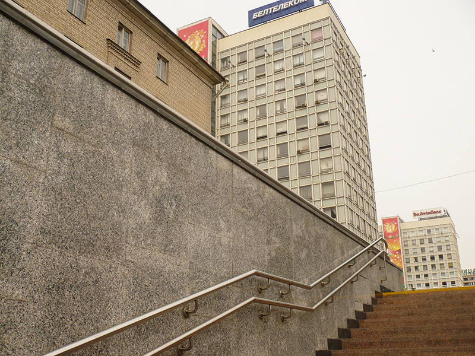

- Миф решетки заставляет нас думать,
- будто мы имеем дело с наукой, с логикой,
- одновременно уводя нас в область веры,
- иллюзии, фантазии.
- Розалинд Краусс
- будто мы имеем дело с наукой, с логикой,
Наступило время обсудить вопрос о метафизике решетки как сюжета в изобразительном искусстве.
Ведь не случайно Сергей Кирющенко в течение тридцати лет упорно шел по пути восхождения от фигуративной живописи к геометрической абстракции. И не случайно этот путь привёл его к искусству самой чистой линии — прямой линии; самой чистой формы — квадрата; к самому архетипическому и строгому отношению прямых линий — вертикали и горизонтали; к простейшему виду ритма — метрическому. И, наконец, к ясному умопостигаемому пространству, где существуют направления всего лишь трёх типов — ширина, высота, глубина.
Ортогональная решетка, параллельная картинной плоскости, в сочетании с перпендикулярной к ней решеткой — идеальная конструкция, обладающая всеми перечисленными здесь атрибутами.
Форма решетки вездесуща, — особенно в изделиях человеческих рук.
В городской среде человек окружен решетчатыми структурами везде и на каждом шагу. Архитектура, мебель, замощение улиц, облицовка стен, различные ткани… примеры слишком многочисленны. Напомним лишь несколько фрагментов пейзажа на улицах города Минска.

Авангардное искусство ХХ и ХХI веков не перестаёт трактовать этот сюжет на разные лады. Вот несколько примеров мотива решетки на Венецианском Биеннале искусства 2009 года.
Что выражают и что означают работы Сергея Кирющенко 2010—2011г., на которых мы не увидим ничего, кроме прямоугольных решеток во фронтальной плоскости и перспективе?
Прежде всего ощущаем их строгий ритм — а это уже немало.
От эпохи палеолита до наших дней ритм — неотменяемый закон не только в жизни человека и в бытии космических сил, но и в первых следах руки первого художника, наносящего на стены пещер ряды параллельных пятен, штрихов, бугорков... Ритмические структуры в виде квадратов и решеток в изобилии встречаются в орнаментации неолитической керамики и мелкой пластики (В.С. Титов. Неолит Греции, 1969).
Изображение решетки найдено даже в пещере Альтамира (палеолит, Испания). Что же касается народного прикладного искусства Белоруссии — то здесь буквально все орнаменты строятся на основе ортогональной решетки — ткачество, вышивки (М.С. Кацар. Беларускi арнамент).

Постоянство геометрических мотивов в искусстве древности объясняется тем, что всякий мотив (линия, зигзаг, круг, квадрат и др.) имели символический смысл. Они были знаками стихий, космических тел, богов. Квадрат был устойчивым символом земли, то есть порождающего начала, богини-матери и опоры жизни.
Художник нашего времени вкладывает иной смысл в изображение решетчатой структуры, но, по существу, этот смысл связан с древними значениями. Современный художник интерпретирует решетку как наглядный «смыслообраз» строгого порядка, закона, правильности форм и отношений, системности.
Изображая ортогональную решетку, Художник говорит «нет» хаосу в жизни общества и искусства, порокам социальной системы и человечества, беззакониям и страданиям. Непоколебимость вертикалей, четкость горизонталей, прямизна углов, архетипичность квадратов и крестов, составляющих решетку — всё это воплощение идеалов полноценного бытия.
Насколько я знаю, в Белоруссии был только один художник, исследовавший возможности решетки как основы образования бесчисленных структур. Это — Людмила Русова. Вот несколько примеров её работ в текстиле.
Сергей Кирющенко не стремится к достижению лёгких эффектов от подобного использования решетки. Он освобождает эту структуру от служебной роли каркаса или таблицы, он предоставляет решетке полную самостоятельность.
18.
19.
Совсем другое выражение лица у решетки, перпендикулярной к картинной плоскости.
24.
17.
20.
Горизонтали стремительно уходят в воображаемую (и вместе с тем реальную) точку схода. Возникает непреодолимая иллюзия глубины пространства, а также быстрого движения от зрителя вдаль.
При помощи «одноточечной» перспективы можно собрать мир «в пятачок», зажать в кулаке, овладеть им. Здесь Художник (а стало быть, и зритель) — центр и хозяин мира, заключенного в раме, поскольку его око находится в центре картины.
Впрочем, за пределами рамы его господство кончается и оказывается иллюзией — ведь рама решительно отделяет изображенный мир от реального. Прямая одноточечная перспектива, изобретенная в Италии эпохи Возрождения трактуется исследователями как выражение претензии на мировое господство, на захват пространства жизни — и вместе с тем — констатация отчуждения художника от изображаемого и заодно — человека от мира и от самого себя (в итоге). От этого происходит пресловутый титанизм эпохи Возрождения.
В ХХ веке классическая традиция в искусстве отступает на обочину жизни. Модернизм не желает больше амбициозных иллюзий и самообмана — вещи обнажают свою сущность, подвергаются анализу, разложению на элементы (в целях исследования). Пространство обретает множество измерений. В архитектуре и градостроительстве исчезают улицы-коридоры, уступив место «свободной планировке». В изобразительном искусстве находят себе применение все возможные способы передачи пространства — от «китайской» до «наивной», «перцептивной» и даже «обратной» перспективы, а также аксонометрии.
Современный художник Сергей Кирющенко, вооруженный знанием всех этих способов репрезентации пространства, выбирает самый научный, геометрический, «чертежный» способ — одноточечную линейную перспективу. Он просто поворачивает решетку на 90° к фронтальной плоскости. При этом её вертикальные стержни отмеряют глубину пространства, а горизонтальные заставляют ваш глаз стремительно двигаться вдаль. Здесь вам наглядно демонстрируют первичные и врожденные измерения пространства — ширину, высоту и скорость движения (24, 17).
Здесь движение — энергичное, быстрое, сравнимое по скорости с трансконтинентальным экспрессом. Но ему поставлена внезапная преграда — фронтальная решетка. Эта узкая и хрупкая на вид плоскость оказалась способной противостоять натиску мощной силы, помноженной на скорость. Так и должно быть: всё подвижное преходяще, а идеал неподвижен в веках. Подвижная сила остановлена неразрушимым препятствием.
Так же безуспешна попытка атаковать решетку справа — и по той же причине.
Существенный момент в композиции работ этого периода — отношение величин ортогональных и перспективных решеток. Если рассматривать серию в целом, то чередование этих двух типов решеток воспринимается как откровение Художника о состояниях его творческой активности. Порыв и динамизм сменяются моментами покоя, самоуглубления, "недеяния". Движение, выраженное в перспективных композициях, варьируется на различных работах. Оно бывает то стремительным (24), то замедленным и неторопливым.
21.
22.
23.
Иногда перспективные решетки беспощадно атакуют фронтальную стелу, иногда напротив, они сжаты с флангов двумя фронтальными решетками, или играют роль скромного обрамления поля картины, уступая почти всю плоскость фронтальной решетке (19).
Крайние случаи: равенство площадей перспективной и фронтальной решеток — динамичное равновесие (24) и статичное равновесие (21, 22, 23).
Казалось бы, имеет ли значение такой чисто формальный фактор, как пропорции частей картины? Думаю, что имеет. Отношения площадей динамичных и статичных решеток отображают состояние интеллекта Художника и его (выражаясь научно) экзистенции, пребывающей , согласно универсальному Закону, в непрерывной смене состояний активности и покоя, сомнений и уверенности, действия и размышлений. Между этими состояниями всегда есть как противоположность, так и единство.
Благодаря такому композиционному приёму, серия картин не утомляет однообразием — напротив, в воображении зрителя могут возникнуть ещё и другие варианты композиций подобного типа.
Достойно внимания также колористическое решение серии 2010 — 2011 годов. Доминирующий цвет всего массива работ — желтый (75% всех полотен). Видимо, это самый удачный выбор. В желтом заключаются в скрытом виде красный и зеленый (в слагательной смеси); В силу последовательной индукции он вызывает в органе зрения синий или фиолетовый (в зависимости от спектрального состава). Из спектральных цветов желтый — наименее утомляющий. Это цвет солнечного света, прошедшего сквозь слой атмосферы, а также (не забудем!) — цвет золота. Все негативные контаминации желтого относятся к его холодным оттенкам, которые здесь отсутствуют.
У Сергея Кирющенко желтый — позитивный цвет, он смягчает суровость рисунка решеток.
Заключительный триптих серии звучит как умеренно оптимистический цветовой аккорд в финале трудного (но успешно преодоленного) пути (21, 22, 23).
На коллективных выставках 2009 — 2011 годов работы Сергея Кирющенко помещали на самом видном месте, в торце зала.
Такая картина, превосходящая размерами все остальные, производила впечатление символа, заглавного Слова всей экспозиции. Действительно, среди множества мелких работ различного характера такая «решетка» была оазисом порядка и разума среди ярмарки житейской суеты.
«Решетка» нормализует психику зрителя, восстанавливает спокойствие, собранность, сосредоточенность человека на самом себе и тем самым напоминает о вечных ценностях и неизменных идеях бытия.
Л. Миронова,
09.07.2011